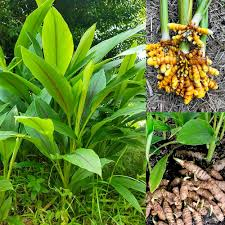

Medicinal plants
Common Medicinal Plants
Tulsi(Holy Basil)
Botanical name:Ocimum tenuiflorum
Tulsi helps boost immunity,reduce stress and improve respiratory health.
supports digestion and relieves anxiety.
Aleo Vera

Botanical name:Aleo barbadensis
Aleo vera is versatile plant widely used for its soothing,healing
and hydrating properties,primarily for skin care and wound healing.
Neem
Botanical name:Azadirachta indica
Neem supporting detoxification,immunity and blood sugar regulation.
it helps with acne,dandruff,gum disease and infections,acting as a natural remedy for various ailments.
Turmeric

Botanical name:Curcuma longa
Turmeric hepls in anti-inflammatory,antioxidant,digestive support,
immune support and turmeric use in cooking and traditional medicine.